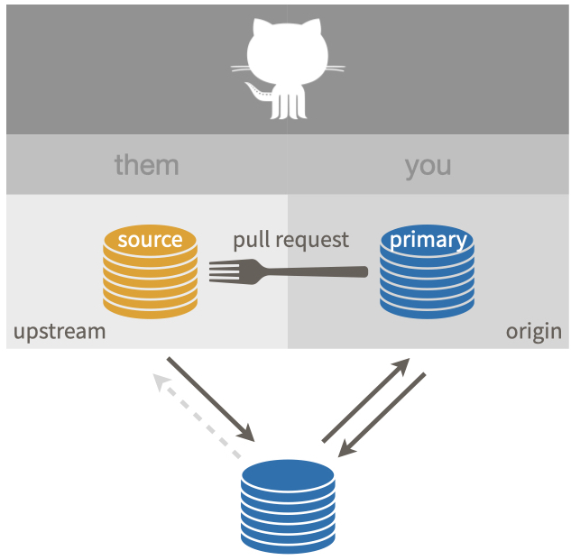
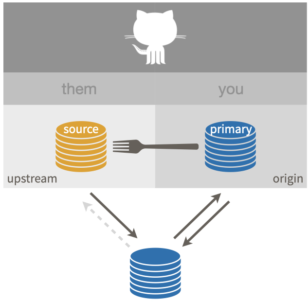

git_remotes()
#> $origin
#> [1] "https://github.com/YOU/REPO.git"
#>
#> $upstream
#> [1] "https://github.com/OWNER/repo.git"32 Get upstream changes for a fork
This workflow is relevant if you have done fork and clone and now you need to pull subsequent changes from the source repo into your copy. We are talking about both your fork (your remote copy of the repo, on GitHub) and your local copy.
This is the ideal starting situation:

First, we’re going to actively verify the above configuration. If your setup is sub-optimal, we’ll discuss how to address that.
32.1 Verify your local repo’s configuration
Vocabulary: OWNER/REPO refers to what we call the source repo, owned by OWNER, who is not you. YOU/REPO refers to your fork, i.e. your remote copy of the source repo, on GitHub. This is the same vocabulary used elsewhere, such as the chapter on common remote configurations.
32.1.1 List your remotes
Let’s inspect the current remotes for your local repo.
You can check this with command line Git in the shell (Appendix Appendix A):
git remote -vWe want to see something like this:
origin https://github.com/YOU/REPO.git (fetch)
origin https://github.com/YOU/REPO.git (push)
upstream https://github.com/OWNER/REPO.git (fetch)
upstream https://github.com/OWNER/REPO.git (push)Comparable info is available in R with usethis::git_remotes():
If you only have one remote, probably origin, I highly recommend you modify the remote configuration. But first, we’ll check one other thing.
32.1.2 View the upstream tracking branch
Ideally, your local main branch has upstream/main as its upstream tracking branch. Even you have a correctly configured upstream remote, this is worth checking. If your default branch has a branch other than main, substitute accordingly.
In the shell, with the default branch checked out, git branch -vv should reveal that upstream/main is the upstream tracking branch:
~/some/repo/ % git branch -vv
* main 2739987 [upstream/main] Some commit messageIf, instead, you see origin/main, I highly recommend you reconfigure the tracking branch.
All of this info about remotes and branches is also included in the rich information reported with usethis::git_sitrep().
32.1.3 Repair or complete your repo’s configuration
Instructions for adding the upstream remote and setting upstream tracking for your default branch are given in Finish the fork and clone setup.
32.2 Verify that your “working tree is clean”
We assume your repo has this favorable configuration:

Make sure you are on the default branch, e.g. main, and that your “working tree is clean”. First, let’s make sure our information on the upstream remote is current:
git fetch upstreamgit status should now show something like:
On branch main
Your branch is up to date with 'origin/main'.
nothing to commit, working tree cleanIf you have modified files, you should either discard those changes or create a new branch and commit the changes there for safekeeping.
It’s also fine if you see something like this:
Your branch is behind 'upstream/main' by 2 commits, and can be fast-forwarded.However, if you see something like this:
Your branch is ahead of 'upstream/main' by 1 commit.or this:
Your branch and 'upstream/main' have diverged,
and have 1 and 1 different commits each, respectively.this is a sign that you have made some regrettable choices.
I recommend that you never make your own commits to the default branch of a fork or to any branch that you don’t effectively (co-)own. However, if you have already done so, we explain how to fix the problem in Um, what if I did touch main?.
32.3 Sync option 1: Pull changes from upstream, then push to origin
Now we are ready to pull the changes that we don’t have from the source repo OWNER/REPO into our local copy.
git pull upstream main --ff-onlyThis says: “pull the changes from the remote known as upstream into the main branch of my local repo”. I am being explicit about the remote (upstream) and the branch (main) in this case, both to make it more clear and to make this command robust to repo- and user-level Git configurations. But if you’ve followed our setup recommendations, you don’t actually need to be this explicit.
I also highly recommend using the --ff-only flag in this case, so that you also say “if I have made my own commits to main, please force me to confront this problem NOW”. Here’s what it looks like if a fast-forward merge isn’t possible:
$ git pull upstream main --ff-only
From github.com:OWNER/REPO
* branch main -> FETCH_HEAD
fatal: Not possible to fast-forward, aborting.See Um, what if I did touch main? to get yourself back on the happy path.
Assuming you’ve succeeded with git pull, this next step is optional and many people who are facile with Git do not bother.
If you take my advice to never work in main of a fork, then the state of the main branch in your fork YOU/REPO does not technically matter. You will never make a pull request from main and there are ways to set the correct base for the branches and pull requests that you do create.
If, however, your grasp of all these Git concepts is tenuous at best, it can be helpful to try to keep things simple and orderly and synced up.
Feel free to push the newly updated state of local main to your fork YOU/REPO and enjoy the satisfaction of being “caught up” with OWNER/REPO, in both your remote fork and in your local repo.
In the shell:
git push origin mainIf you’ve followed our configuration advice, you really do need to be this explicit in order to push to origin (not upstream).
32.4 Sync option 2: Sync your fork on GitHub, pull changes from origin to local repo
For many years, this was not possible, though many GitHub users wished for this feature. Happily it is now possible to sync a fork with its source repo in the browser, i.e. to do the sync between the 2 GitHub repos. The official GitHub documentation for this is Syncing a fork branch from the web UI.
Navigate to the main page of your fork YOU/REPO, i.e. your primary repo which is configured as the origin remote.
At the top you’ll see some information on how the state of main in your fork relates to main in the source repo, similar to what we see with git status in the alternative approach above. Ideally you will see something like:
This branch is 2 commits behind OWNER:main.which indicates you can sync up in the ideal fast-forward sense.
If you see something like this:
This branch is 1 commit ahead, 2 commits behind OWNER:main.this is a sign that you have made some regrettable choices.
I recommend that you never make your own commits to the default branch of a fork or to any branch that you don’t effectively (co-)own. However, if you have already done so, we explain how to fix the problem in Um, what if I did touch main?.
Once you are ready to proceed, click “Sync fork” in the upper right corner. Upon success, the main page of YOU/REPO shows something like
This branch is up to date with
OWNER/REPO:main.
If you have made commits on the default branch of your fork, which we strongly advise against, this can result in a merge commit (or even merge conflicts). If you are suffering due to commits you’ve made on main and it’s beyond the help we describe below, consider deleting your fork and local repo and making a fresh start with Fork and clone. Live and learn.
Once you have successfully synced the default branch of YOU/REPO with the default branch of OWNER/REPO, you probably want to do the same for your local repo. Since they are synced, you can pull from either upstream or origin.
In the shell, with the default branch checked out, execute one of these:
git pull upstream main --ff-only
git pull origin main --ff-onlyIf you’ve followed our configuration advice, you don’t actually need to specify the remote and branch, because this branch is configured to pull from upstream. For the same reasons as before, it’s a good idea to include the --ff-only flag. If you have made local commits to main, this will surface that problem, which is solved in the next section.
32.5 Um, what if I did touch main?
I told you not to!
But OK here we are.
Let’s imagine this is the state of main (or whatever the default branch is called) in the source repo OWNER/REPO:
... -- A -- B -- C -- D -- E -- Fand and this is the state of the main branch in your local copy:
... -- A -- B -- C -- X -- Y -- ZThe two histories agree, up to commit or state C, then they diverge.
If you want to preserve the work in commits X, Y, and Z, create a new branch right now, with tip at Z, like so, but substituting your preferred branch name:
git checkout -b my-great-innovationsThis safeguards your great innovations from commits X, Y, and Z. Now checkout main again:
git checkout mainI now assume you have either preserved the work in X, Y, and Z (with a branch) or have decided to let it go.
Do a hard reset of the main branch to C.
git reset --hard CYou will have to figure out how to convey C in Git-speak. Specify it relative to HEAD or provide the SHA. See future link about time travel for more support.
The history of your main branch is now compatible with its history in OWNER/REPO. The instructions above for pulling changes from upstream should now work. A fast-forward-only pull should succeed.
git pull upstream main --ff-onlyAnd now your local history for main should match that in the source repo:
... -- A -- B -- C -- D -- E -- FIf you chose to create a branch with your work, you will also have that locally:
... -- A -- B -- C -- D -- E -- F (main)
\
-- X -- Y -- Z (my-great-innovations)If you pushed your alternative history (with commits X, Y, and Z) to your fork YOU/REPO and you like keeping everything synced up, you will also need to force push main to the origin remote:
git push --force origin mainWe really, really don’t like discussing force pushes in Happy Git, though. We only do so here, because we are talking about a fork, which is fairly easy to replace if things go sideways.